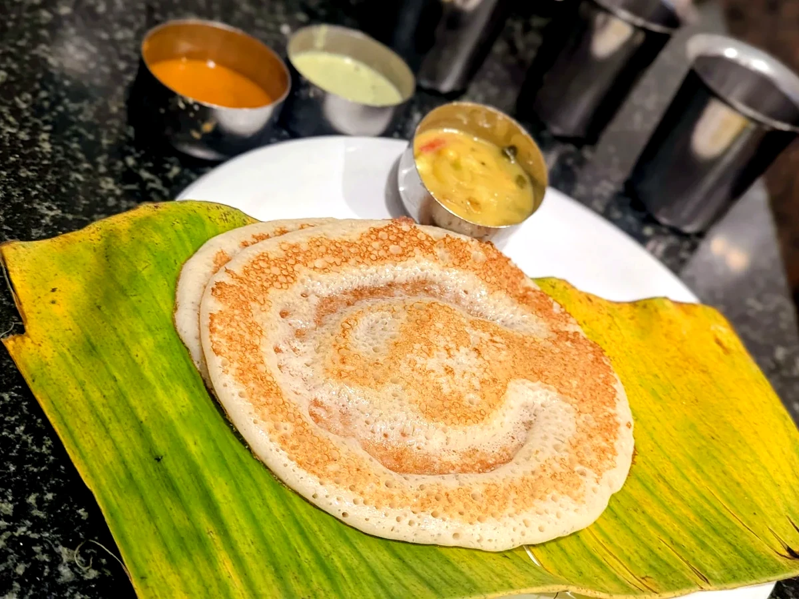
Set Dosa
Soft, light and served with traditional accompaniments.
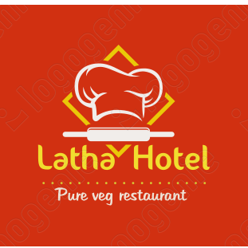
Latha HotelKota · Kundapura Directions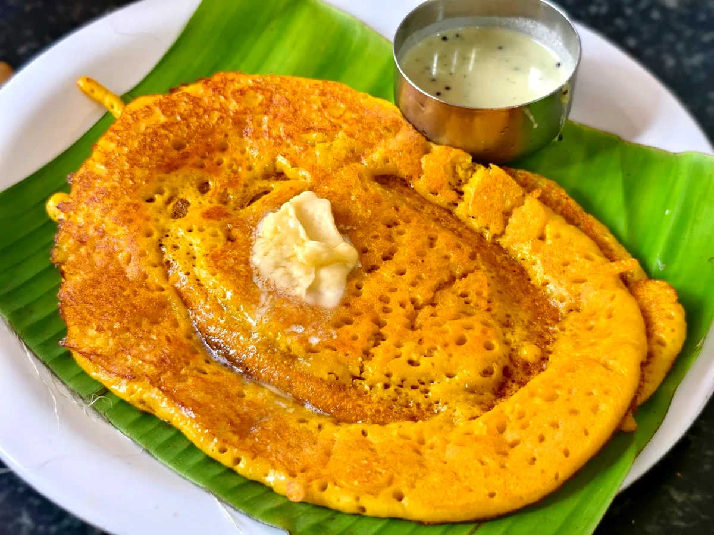
Kota · Kundapura · Since 1960
Pure vegetarian North and South Indian food, prepared with consistency, quality and more than six decades of family tradition.
Our story
What began as a modest vegetarian hotel in Kota has grown into a familiar name known for quality food at reasonable prices.
The enterprise was founded by Kota Balakrishna Prabhu. His son Venkatesh Prabhu carried the tradition forward, and it continues today with his grandson Rajesh Prabhu.
Across three generations, Latha Hotel has served pure vegetarian North and South Indian food while preserving the dependable taste and hospitality guests remember.
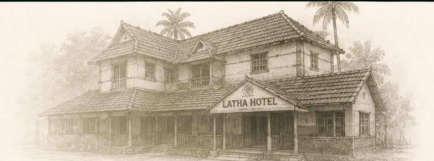
Signature dishes
A selection of well-loved dishes from the Latha Hotel kitchen.
Latha Hotel signature
Soft, aromatic and distinctive. A long-standing favourite closely associated with Latha Hotel.

Soft, light and served with traditional accompaniments.
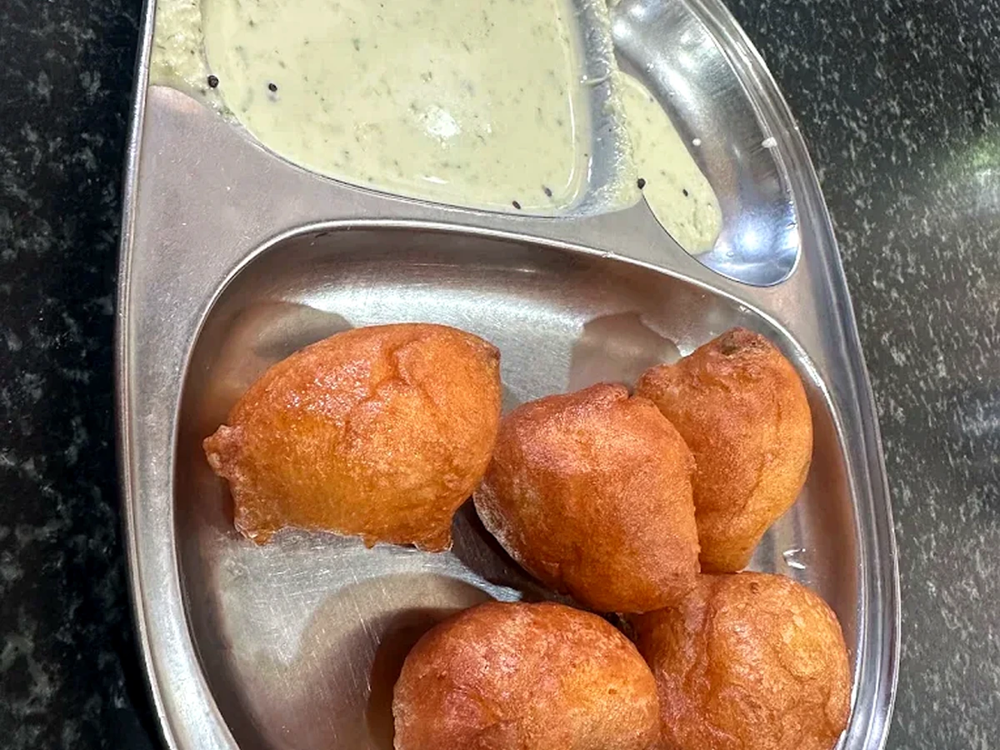
Crisp outside, soft inside and ideal for evening service.
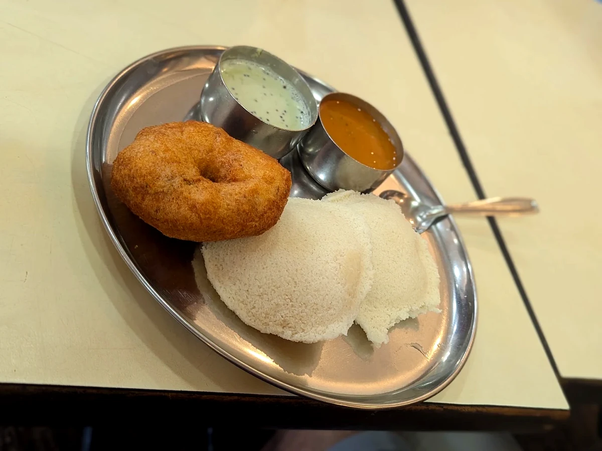
A dependable South Indian breakfast combination.
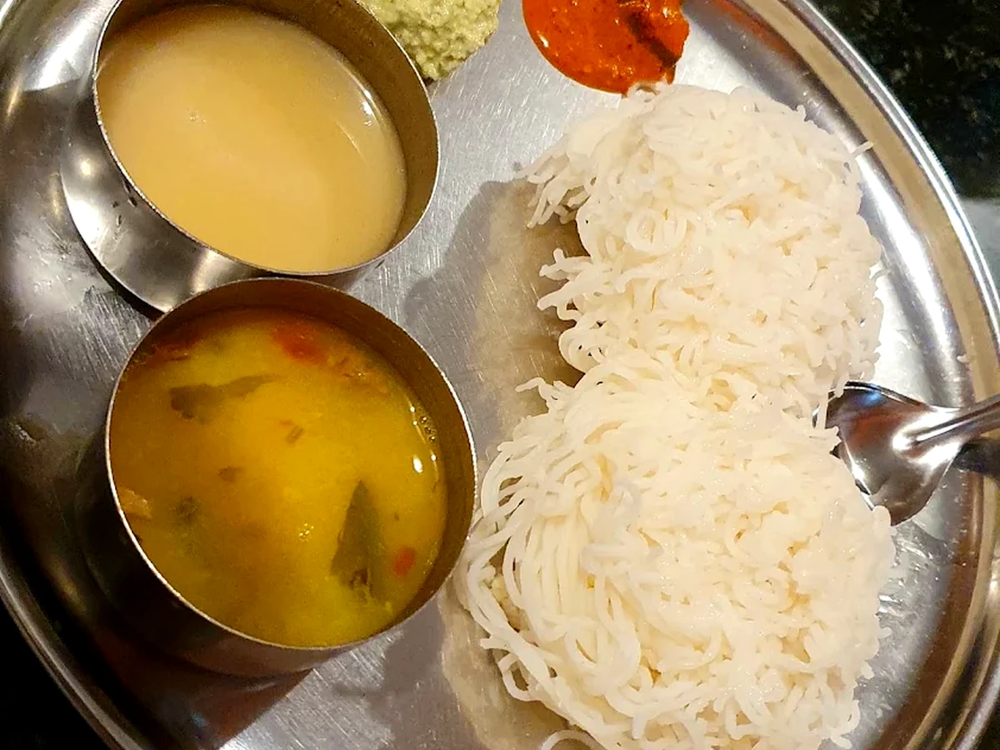
Delicate rice noodles served with familiar accompaniments.
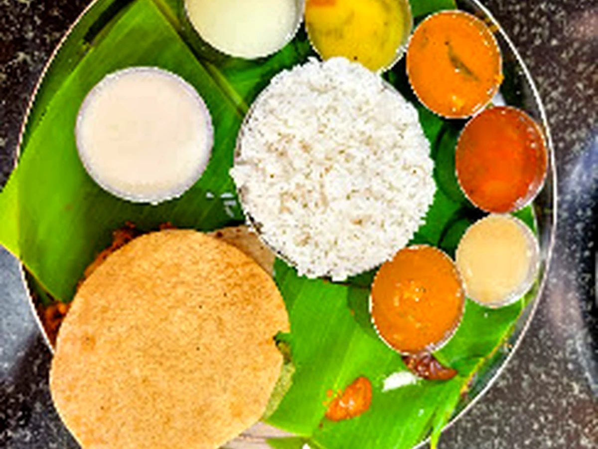
A wholesome plate with rice, curries and seasonal sides.
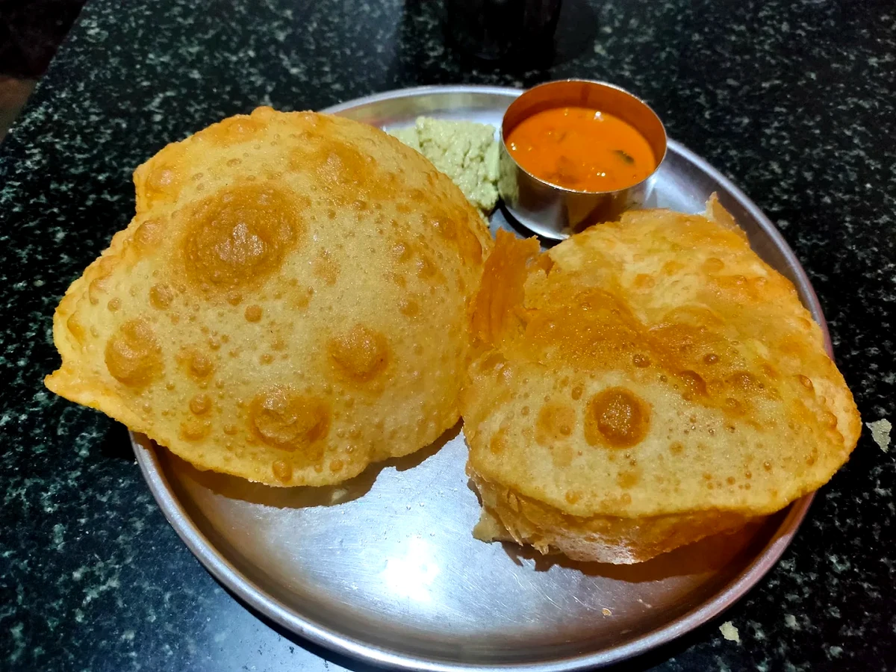
A familiar North Indian favourite, rich and satisfying.
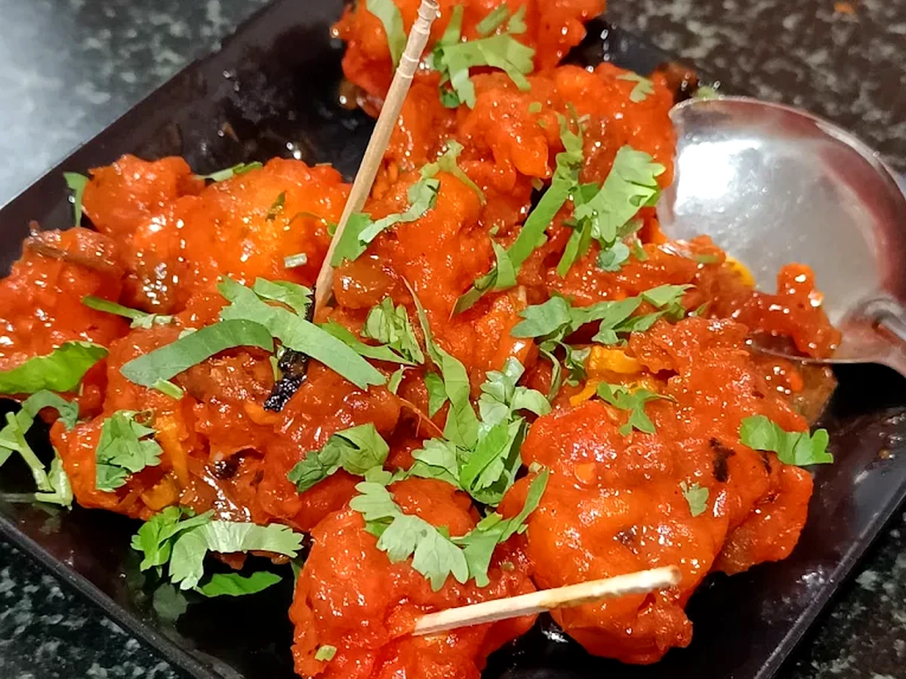
Crisp cauliflower with bold Indo-Chinese seasoning.
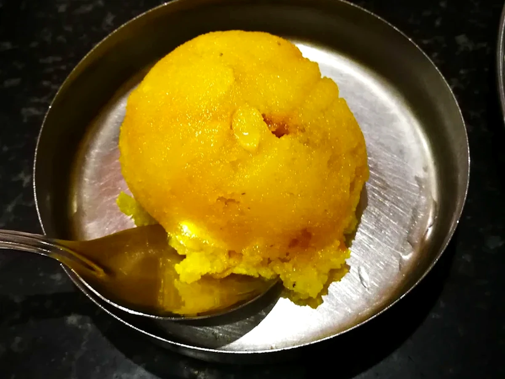
A warm, comforting sweet prepared in the traditional style.
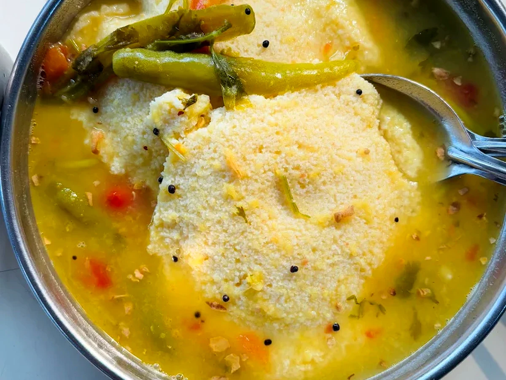
Our philosophy
Good vegetarian food does not need unnecessary complexity. It depends on consistency, fresh preparation and respect for familiar flavours.
Visit us
Fisheries Road, Kota
Karnataka 576221